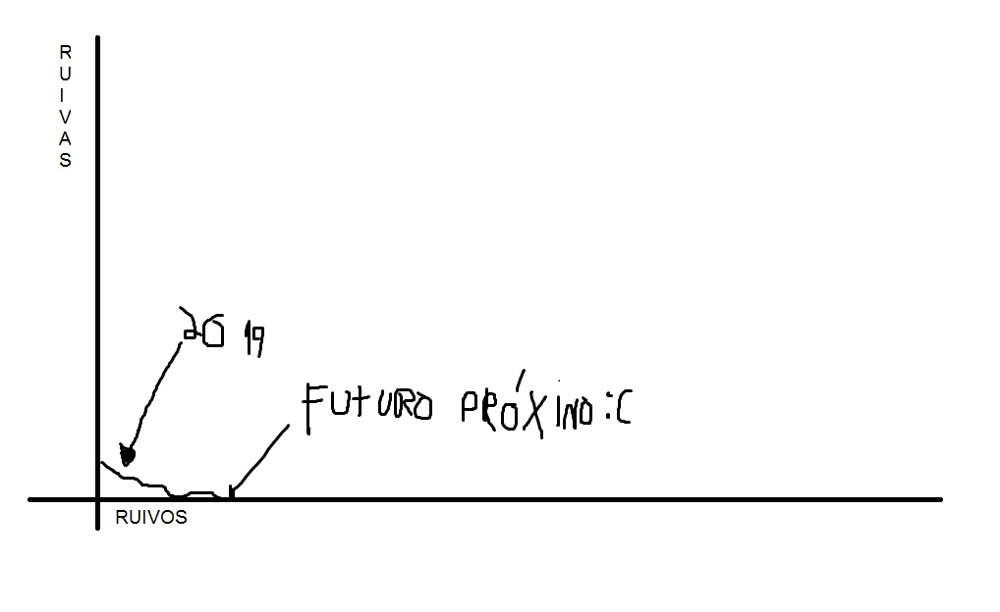

Você tem duvidas? pode pensar que arianas são mais, ou as eslavas, e as belas francesas, e as lindas japonesas?, apenas veja isso e veja se terá mais alguma dúvida:
Lamento informar meu amigo, se você ainda tem um minimo resquicio de dúvida, você é gay
Infelizmente a população ruiva está diminuindo, por um motivo muito simples de ser entendido, oferta e demanda associado ao básico de genética:
O gráfico é bem simples, básicamente o gene ruivo não é dominante, relembremos das aulas de ciência, o gene ruivo é o a(azinho), com isso em mente pense no seguinte: Ruivas darão mais atenção a ruivos, os genes ruivos já são raros, associemos isso ao mundo multicultural que temos hoje em dia e o que acontece? raramente uma ruiva conseguirá encontrar um ruivo, e assim tranzará com uma pessoa sem o gene ruivo, o filho desse casal nascerá com o gene não ruivo, já que o gene ruivo não será o dominante, e sim o do marido, logo o sangue ruivo irá diminuindo e diminuindo, se misturando com genes negros(que são dominantes)(e também podres) e com genes não ruivos aleatórios, até não restar mais uma única buceta ruiva
Então é melhor apreciarmos essa divinas criaturas enquanto elas ainda existem, pois, meu amigo, talvez seu neto já não terá mais esse privilégio
"bela teta" - GANDHI, mahatma. 2015